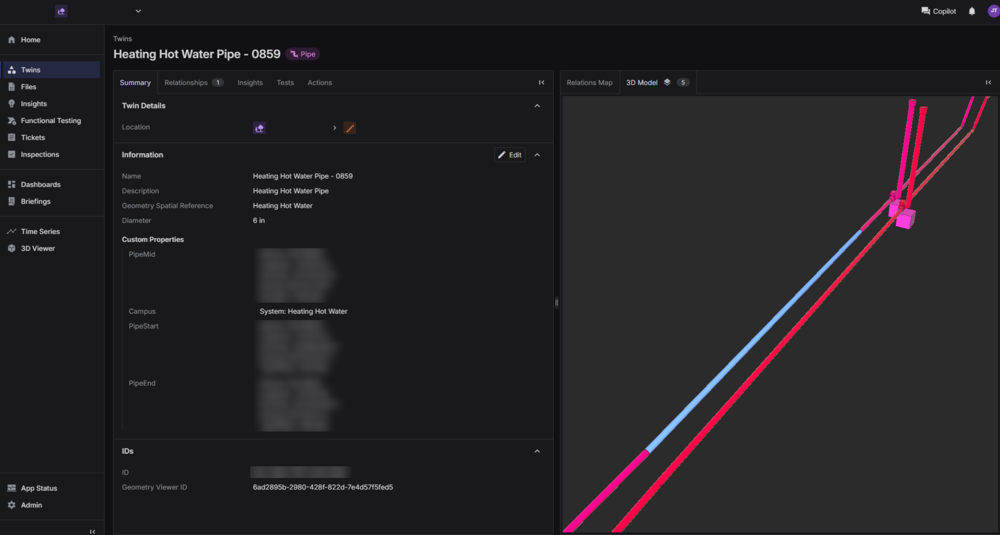
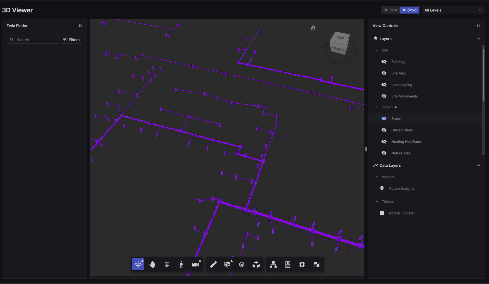

Academic · Healthcare · Aviation · Enterprise
Digital Twin Deployment Portfolio

Data Modelling

Static

Spatial
I have delivered digital twin deployments across multiple industries, including academia, healthcare, aviation, commercial real estate, and enterprise facilities. My work focuses on converting fragmented BIM, engineering, and operational data into structured, validated digital assets that can be activated and used by client teams.
- Projects delivered: Walmart, UTSW, DFW Airport, UCF, Columbus State University, NAU, Microsoft, and Brookfield.
- Industries supported: Academic campuses, healthcare facilities, airport infrastructure, enterprise portfolios, and built environment operations.
- Deployment scope: Static data deployment, spatial data deployment, room/location mapping, asset onboarding, data validation, and digital twin modeling.
- What I did: Mapped room and asset data, validated engineering and operational information, built structured loadsheets, coordinated onboarding across teams, and supported platform activation for client stakeholders.
- Data modeling: Created and maintained data models for building systems using Revit, BIM, and operational metadata to ensure a consistent digital twin structure across projects. This work is aligned with the public Willow open digital twin model and building schema in opendigitaltwins-building.
- Reporting enablement: Built SharePoint and Azure DevOps reporting workflows that improved visibility into project progress, backlog status, and deployment readiness.
Static DataSpatial DataData ModelingDigital TwinDeployment